Lucka 4 · Pepparkaksdansen som musikvideo, storyboard v3
En stillbild per bild, renderad ur den riktiga scenen (levande björnrigg, kakornas nya riggar med armar, ben och partyhattar). Tider i sången (filmtid = sångtid + 0:55). Sången spelas hel; ett klipp per fras, aldrig mitt i en fras.
Nytt i v3: kakorna har armar och ben som rör sig (gubbens egna klipps loss), partyhattar, och fyra nya sorters bilder: rutnät på starka färger, rosett ovanifrån, den udda i mitten (vinkar, blinkar) och fyra rutor med ansikten. Strössel på varje "kom och se". Provfilmen prov-kaka.mp4 visar hjärtat dansa.
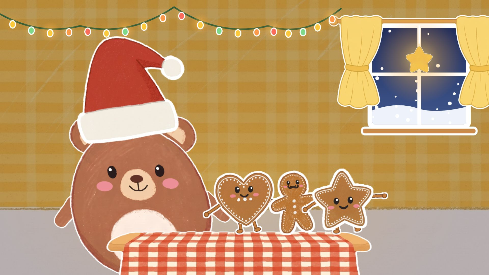
10:00–0:04(förspel)Köket, helbildBjörnen gungar, kakorna gungar med armarna, slingan lyser i takt
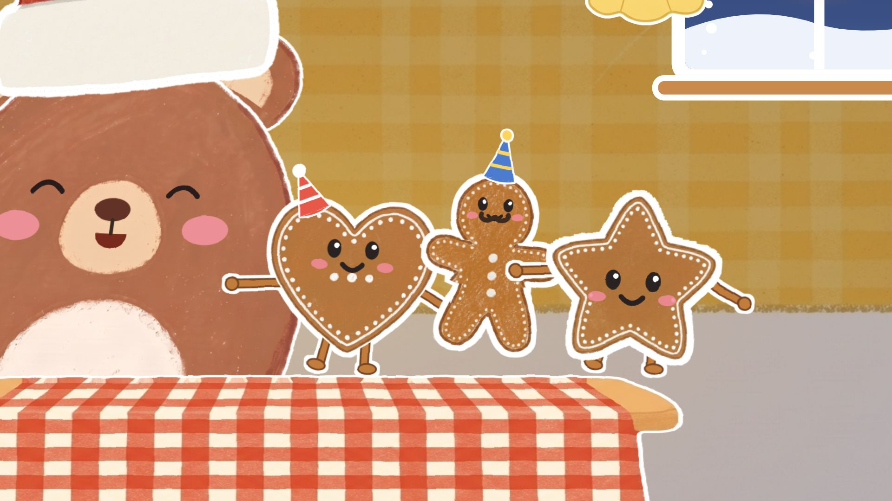
20:04–0:09(förspel)Kameran åker in på kakornaPARTYHATTARNA poppar fram, kakorna hoppar om vartannat med armar och ben
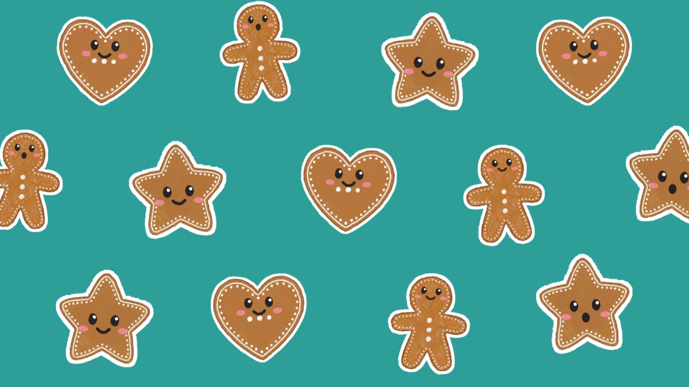
3a0:09–0:13Pepparkakor,RUTNÄT på blågröntEn våg av hopp snett över mönstret
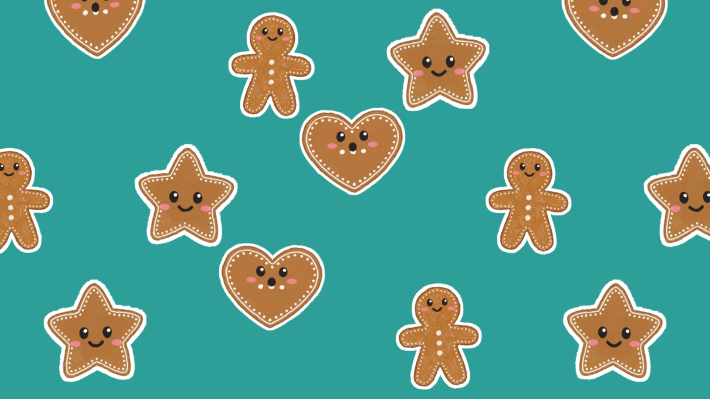
3ben, två, tre,RutnätHjärtan hoppar på "en", gubbar på "två", stjärnor på "tre"
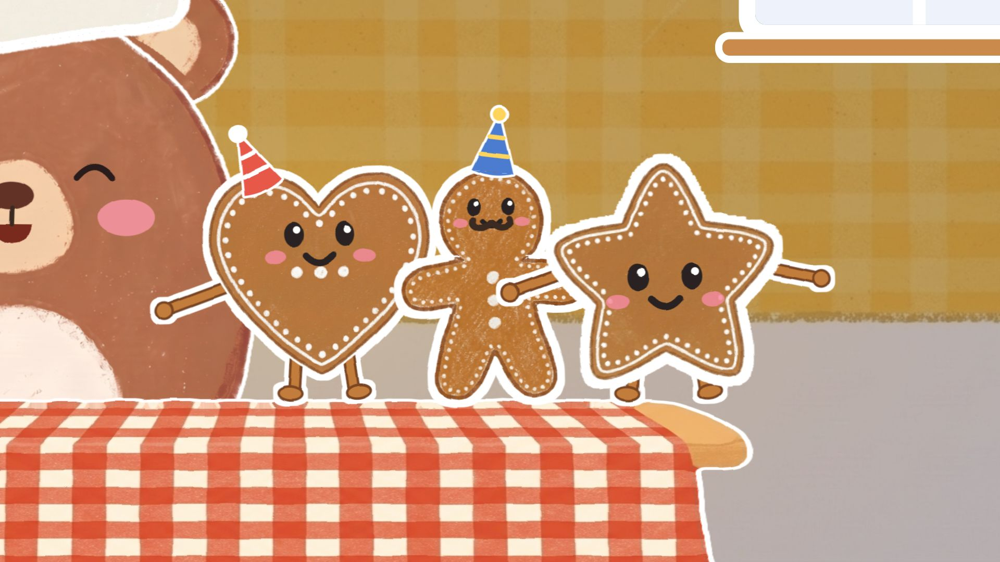
40:13–0:18dansar på bordet, kom och se!BordsnivåDansar med armarna, STRÖSSEL på "kom och se"
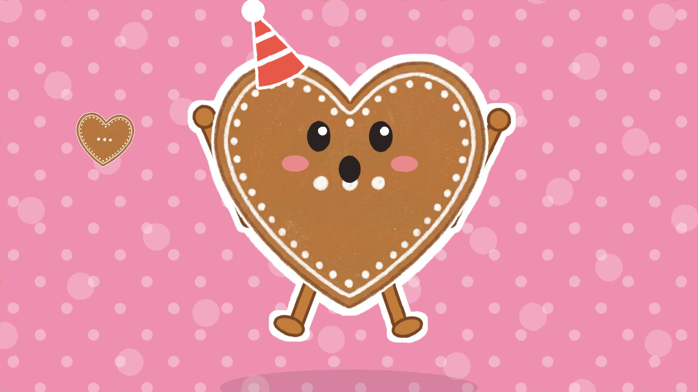
50:18–0:22Hjärtat hoppar, upp och ner,Hjärtat nära, rosaARMARNA UPP på "upp", hukar på "ner", tre hjärtan poppar
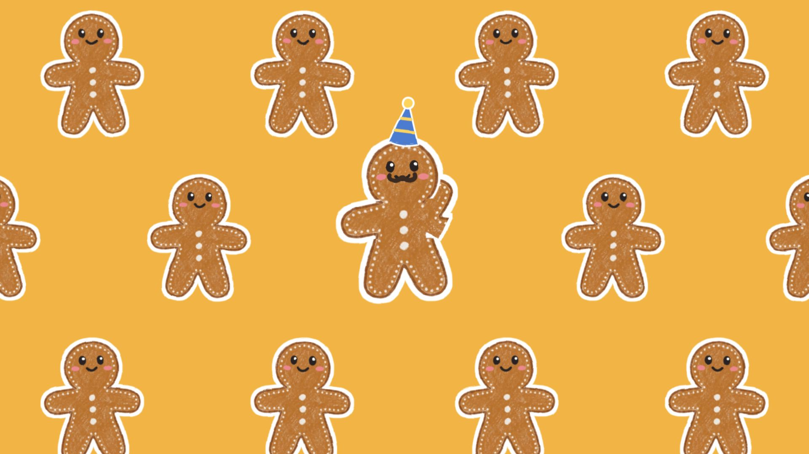
6a0:22–0:26gubben vinkar,RUTNÄT med gubbar på senap, kameran åker inDEN UDDA: gubben i mitten vinkar på riktigt
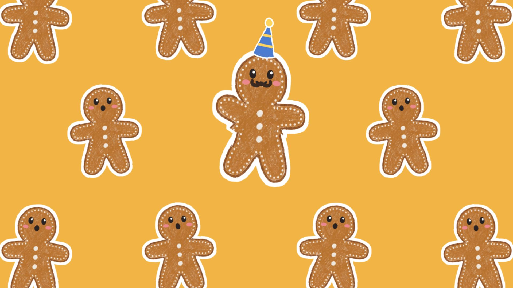
6bvill ha mer.RutnätEn ring av hopp ut från gubben, strössel
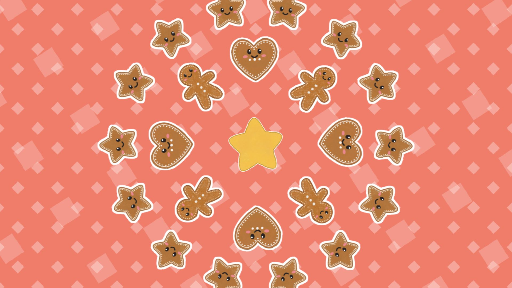
7a0:26–0:31Dansa, dansa, pepparkaka,ROSETT ovanifrån på korallAndas på slaget, hoppar utåt om vartannat
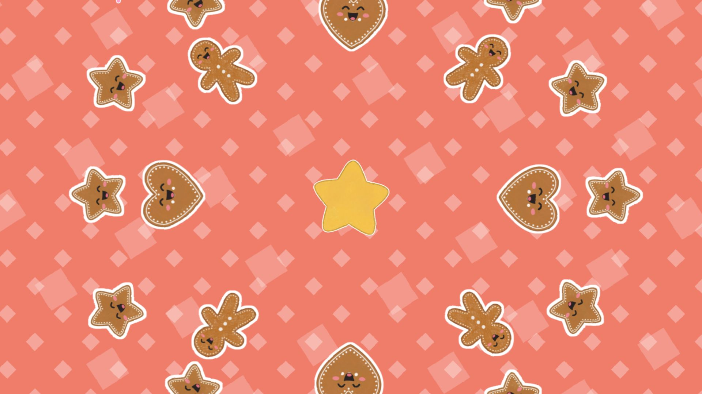
7bhoppa högt och gunga sakta!RosettSTORA HOPPET utåt + strössel, sedan gungar de sakta
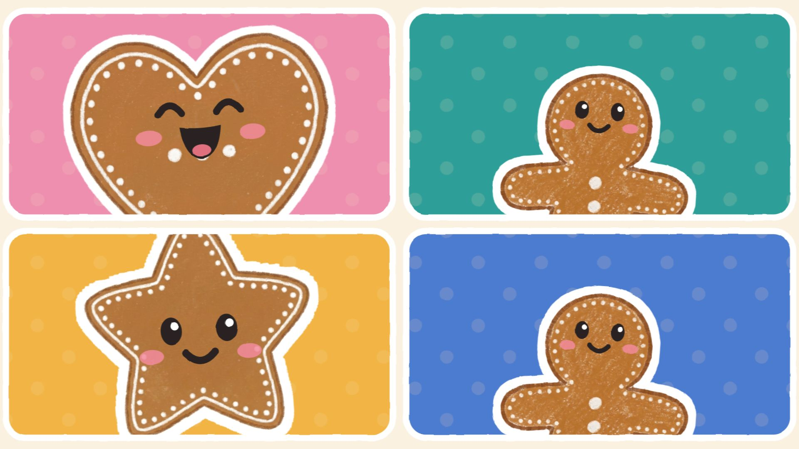
80:31–0:35Dansa, dansa, ett, två, tre,FYRA RUTOR på krämEn ruta per slag, en per tal (skrattar), den fjärde blinkar
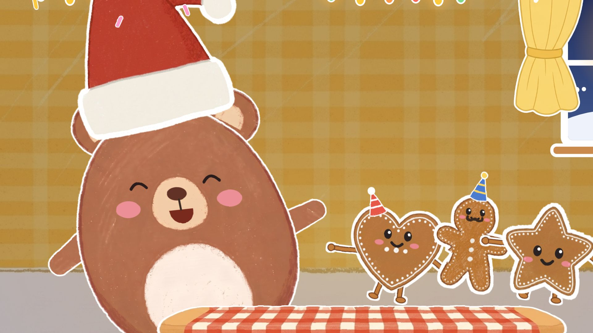
90:35–0:39pepparkaksdans, kom och se!Köket, åker in på björnenBjörnen skrattar och dansar, strössel